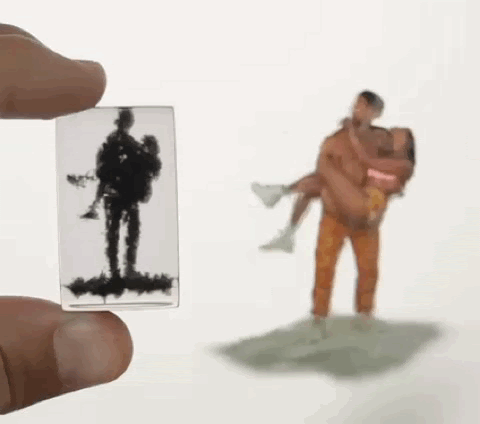
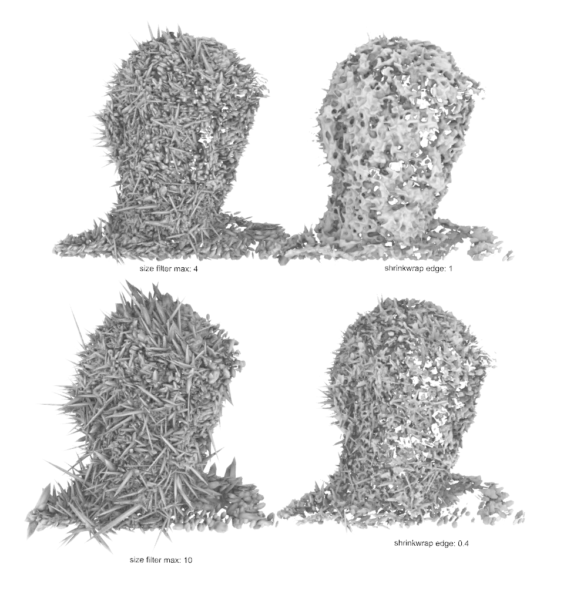
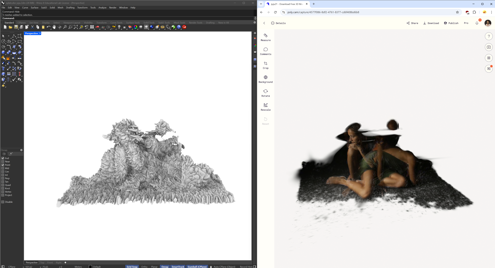
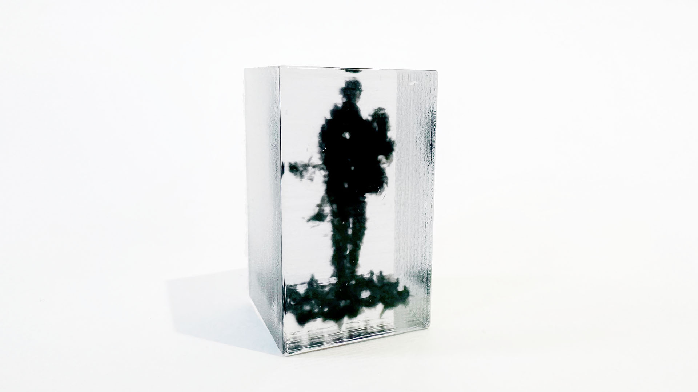

Hold 3D photos in your hand.

Gaussian splats model real‑world scenes as thousands of semi‑transparent “blobs” in 3D space, capturing soft boundaries, translucency, and motion more naturally than polygonal meshes. Yet, these volumetric datasets remain confined to 2D screens and mouse‑driven interactions. In this project, we aim to bring splats back into the tangible analogue world. Methodologically, we:
Digital photography has long compressed the richness of the physical world into two dimensions. With the advent of volumetric capture techniques such as Neural Radiance Fields and Gaussian Splatting, we now possess representations that encode scenes as probabilistic, spatially distributed semi-opaque volumes. These formats provide more accurate approximations of physical reality, emphasizing the blurriness and continuity of real-world boundaries over the hard edges of mesh topology.
However, splats remain inherently digital, bound to the screen and navigable only through mouse-driven interaction. In this work, we develop a novel technique for physically manifesting splats via 3D printing. Our system translates the digital representation of a Gaussian field into an artifact that can be held, viewed from any angle, and appreciated as a form of tangible volumetric memory.
While volumetric rendering has advanced significantly in realism and efficiency, few efforts have bridged the gap between volumetric capture and physical fabrication. Most existing fabrication pipelines rely on mesh representations or voxel grids. Our work proposes a direct transformation of probabilistic geometry—Gaussian splats—into physical form. Inspired by cubist attempts to depict multiview reality and prior research on motion-capture CNC forms, this project investigates how volumetric "photographs" might be preserved through material instantiation.
We utilize mobile-based photogrammetry platforms (e.g., Polycam, Luma, Scaniverse) to generate Gaussian splat datasets, exported in .ply format. Each splat is defined by its 3D position, anisotropic exponential scale, rotation (as quaternion), color (RGB), and opacity.
Polycam’s output is binary-encoded for efficiency. We developed a Python script to convert binary .ply files into human-readable ASCII format, enabling direct parsing within Rhino/Grasshopper.
Each row in the ASCII file corresponds to a splat. We analyze the data header to map column positions to their semantic values. Key challenges included decoding exponential scale factors, interpreting quaternion-based rotations, and filtering visually irrelevant fields.
Each splat is approximated as a low-poly 14-face icosphere. This balances computational performance with visual fidelity. While true Gaussian density fields have ellipsoidal falloff, we opt for geometric proxies to enable mesh Boolean operations and physical fabrication.
Each blob is instantiated at its 3D position and transformed according to its scale and rotation. Quaternion-to-Euler conversion and transformation matrices are computed within Grasshopper/C# components.
To normalize splat location across diverse capture environments, we compute the centroid of all splats and offset the cloud to the origin. Global scale factors are introduced to fit printable volumes.
We compute statistical summaries of splat sizes and apply percentile-based filtering to remove outliers—typically large, low-detail background splats or undersized noise artifacts.
We interpret splat opacity as a physical measure of material density. Thin splats are thickened proportionally to their opacity value to ensure printability while preserving relative transparency cues.
Highly anisotropic splats are unsuitable for fabrication due to sub-millimeter thinness. We enforce minimum thicknesses across all axes.

After instantiating splat proxies, we shrinkwrap the mesh collection to remove overlaps, decimate the result, and subtract it from a bounding cube to define clear (air) and opaque (material) regions.
We map opacity to material density by selecting black/white resin pairs, or embedding opaque shapes within clear resin containers (splatcubes). Multi-material resin printing is supported via dual-mesh STL output.
Artifacts are printed on a DLP printer at 50 µm resolution. Post-processing includes sanding, polishing, and resin reflow to ensure clarity and remove support residue.
We prototype a novel extension: long-exposure splats that encode motion over time. Using a 9-camera linear array, we captured 30-second exposures of a moving subject under dynamic lighting. Photogrammetric reconstruction produced spatially extended splats resembling volumetric motion trails. While noisy due to limited angles, the results hint at potential for temporally layered splatcubes—physicalizations of time.

We demonstrate splatcube outputs across various scenes: still lifes, portraits, and long-exposure motion traces. Artifacts show spatial coherence and printable fidelity. The low-poly proxy approach preserves splat characteristics while enabling fabrication.
Our system currently assumes static scenes and monochrome printing. Future work includes: color encoding using multi-resin or voxel printing, improved filtering via confidence scores, higher-fidelity temporal splats from video, and real-time acceleration.
We present a complete workflow for physicalizing 3D Gaussian splats as tangible artifacts. Bridging the gap between volumetric rendering and fabrication, this method invites new ways of capturing, preserving, and interacting with space-time events. As an artistic and technical medium, splatcubes represent an emerging form of volumetric photography—one that is not merely seen, but held.
Of fifteen 10cm³ test cubes, all succeeded at replicating splats in a single color with sub‑millimeter fidelity. This demonstration of tangible Gaussian‑splat prints yields free‑standing analogue objects that can be held and rotated naturally. Applications include art installations, scientific visualization, and design prototyping. Future work will explore full‑color splatcubes, automated post‑processing, and 4D “time‑encoded” prints via long‑exposure gaussian splat captures.
